← Índice de los 69 tutes de IDA
Tute 25 · Estructuras en IDA (1)
▶ video afín (mismo autor, en x64dbg): «23 Ejercicio con Estructuras (con símbolos)» · se conecta con: IDA · Memoria
INTRODUCCIÓN AL REVERSING CON IDA PRO DESDE CERO PARTE 25.
ESTRUCTURAS
En esta parte comenzaremos el estudio de como ayuda IDA PRO a reversear cuando el programa utiliza estructuras.
Al final de esta parte estarán las soluciones de IDA3 e IDA4 brevemente pues ya es un tema sabido así que será bien breve la solución.
Que es una estructura?
No es necesario una definición muy técnica pero vimos que los ARRAYS eran tipos de datos contenedores, que reservaban un espacio en memoria para sus campos los cuales eran todos del mismo tipo, así puede haber ARRAYS de bytes, de words, de dwords, el tema es que en un mismo array no puede haber campos de diferente tipo.
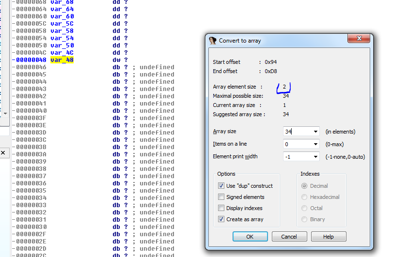
Ahí vemos un ejemplo de un ARRAY que tiene size 34, y cada elemento tiene size 2 o sea cada elemento es un Word, por lo cual el largo total del mismo será 34 * 2 o sea 68 decimal.
En este array de ejemplo, cada elemento es un word o sea que ocupa 2 bytes, si quiero un array que tenga elementos de 1 solo byte deberé construir otro array, ya que no puedo mezclar en el mismo datos de diferente tamaño o tipo.
La Estructura por otro lado permite mezclar diferentes tipos de datos de diferentes tamaños dentro del mismo.
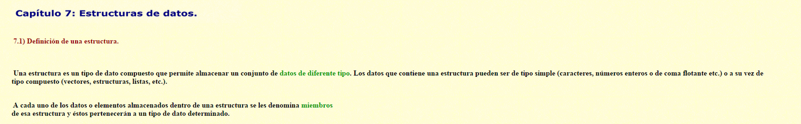
Ahí está la definición más elegante pero es eso, podremos tener un contenedor de diferentes tipos de datos y acá el largo será la suma del largo de todos los miembros o campos.
struct MyStruct
{
char * p_size;
char size;
int cookie;
int leidos;
int cookie2;
int maxsize;
int(*foo2)(char *);
void * buf2;
char buf[50];
};
En C++ podríamos definir una estructura de esa forma, en este ejemplo vemos la estructura llamada MyStruct que tiene varios campos dentro, no es necesario que seamos grandes genios de la programación para darnos cuenta de que no es lo mismo una variable int que una variable char o un buffer de 50 bytes.
Si tengo Visual Studio, puedo ver el size de toda la estructura que es 0x54.
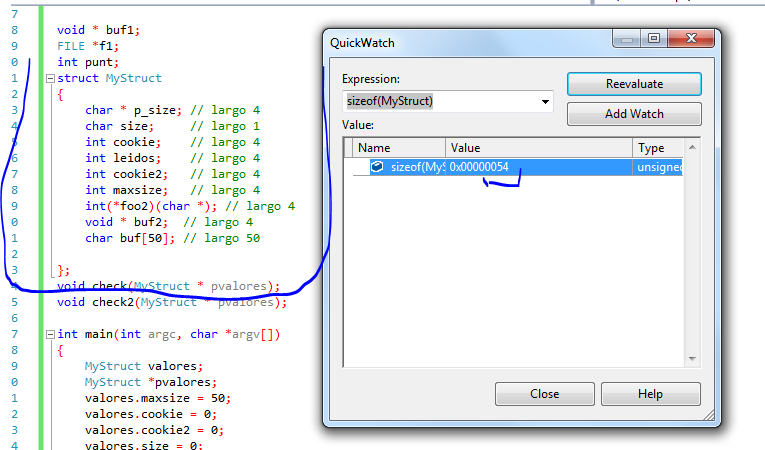
Hago esto para verificar después lo que hagamos en IDA, no tiene mucha importancia si no tienen mucha idea de cómo se maneja Visual Studio, lo toman como información.
Vemos que la suma total de los campos me da un poco menos que la cantidad que asigna al compilar pero eso suele pasar que el compilador asigne un poco más.
El puntero a una variable carácter es de largo cuatro porque es un puntero que es un dword y su contenido apunta a una variable carácter.
char * p_size; // largo 4
Lo mismo los otros punteros a función y a buffer son punteros que son dwords o sea que su largo es 4 bytes y que apuntan a diferentes tipos de datos de diferente largo, pero en la estructura solo se guarda el puntero o sea que cada uno solo suma 4 bytes.
int(*foo2)(char *); // largo 4 puntero a función
void * buf2; // largo 4 puntero a buffer
En cambio el ultimo buffer no es un puntero (no tiene el asterisco (*), así que es un buffer que está directamente dentro de la estructura ocupando 50 bytes de la misma).
char buf[50]; // largo 50 decimal
Lo importante de todo esto, más que los largos en sí, es darse cuenta que las estructuras son contenedores de diferentes tipos de datos y que es muy difícil que al desensamblar, IDA pueda reconocer cada campo y su tipo automáticamente, sobre todo si no tenemos los símbolos.
Hagamos un ejemplito sencillo para ir acostumbrándonos a detectar y manejar la estructura en IDA.
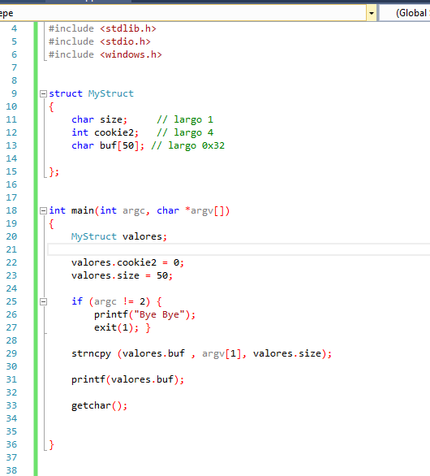
Vemos un código sencillo que recibe un argumento a través de la consola si no lo ejecutamos con algún argumento saldrá diciéndonos “Bye Bye”
Podríamos arrancarlo así
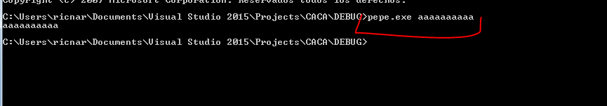
Si solo hiciéramos doble click o no pusiéramos algún argumento, chequearía que argc que es la cantidad de argumentos es diferente de 2 y nos tira fuera (la cantidad de argumentos incluye al nombre del ejecutable así que en este caso serían dos argumentos el primero pepe.exe y el segundo aaaaaaaaaaa)
if (argc != 2) {
printf("Bye Bye");
exit(1); }
Vemos que pasa ese chequeo ya que argc es 2.
Además de la definición de esta estructura como tipo de dato, podemos hacer que haya variables que además de poder ser del tipo int, char, float o el tipo que sea, además puede haber variables del tipo MyStruct.
De la misma forma que declaramos una variable entera por ejemplo poniendo el tipo de dato delante
int pepe;
Es similar en el caso de la variable del tipo estructura
MyStruct valores;
Con lo cual la variable valores será del tipo MyStruct tendrá la misma definición, el mismo largo y los mismos campos.
Podríamos crear varias variables diferentes del tipo MyStruct
MyStruct pinguyo;
Y para referirnos a los campos de alguna de ellas se usa
valores.size
pinguyo.size
valores.cookie2
De esta forma en el programa se asignan los valores a algunos campos de la variable valores.
valores.cookie2 = 0;
valores.size = 50;
Y luego se hace un strncpy de las aes que están en la variable argv[1] al buffer de 50 bytes decimal valores.buf, tomando como máximo size, el valor de valores.size que es 50.
strncpy (valores.buf , argv[1], valores.size);
Así que no habrá overflow pues copia 50 bytes a un buffer de 50 bytes de largo, no desborda.
Luego imprime lo que tipeamos que está ahora guardado en valores.buf para mostrarlo.
printf(valores.buf);
Y finalmente hay una llamada a getchar() para que no se cierre solo hasta que apretemos alguna tecla y podamos ver las Aes.
Ahora abramos el ejecutable en IDA y vamos a ver cómo podemos interpretar esto.
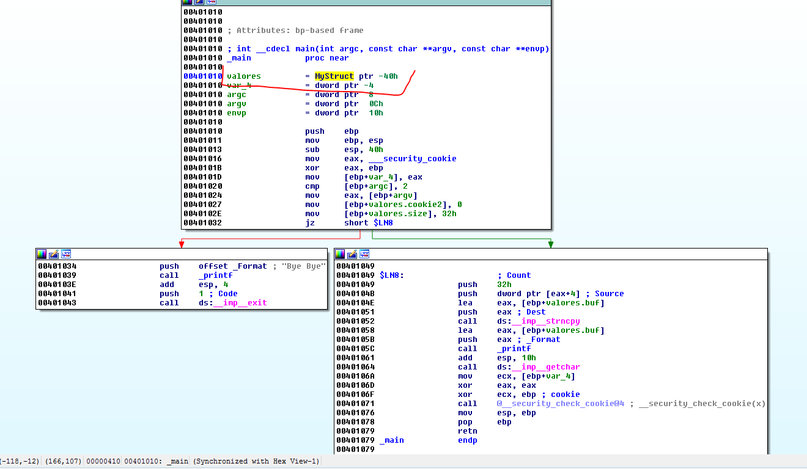
Vemos que cuando hay símbolos todo es felicidad, IDA detecto a valores como una variable del tipo MyStruct, sin problema, incluso dentro del código vemos que accede a los campos de la estructura con su nombre perfectamente.
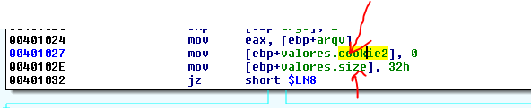
También aquí
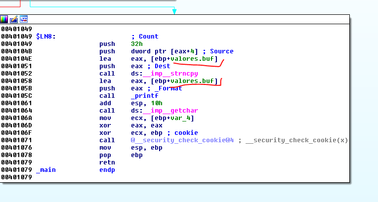
Vemos que detecta el buffer de 50 bytes ya lo tiene renombrado como valores.buf, en el strncpy y en el printf final.
Inclusive si vamos a la pestaña estructuras.
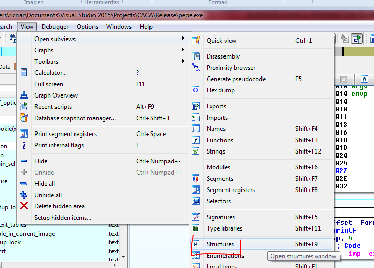
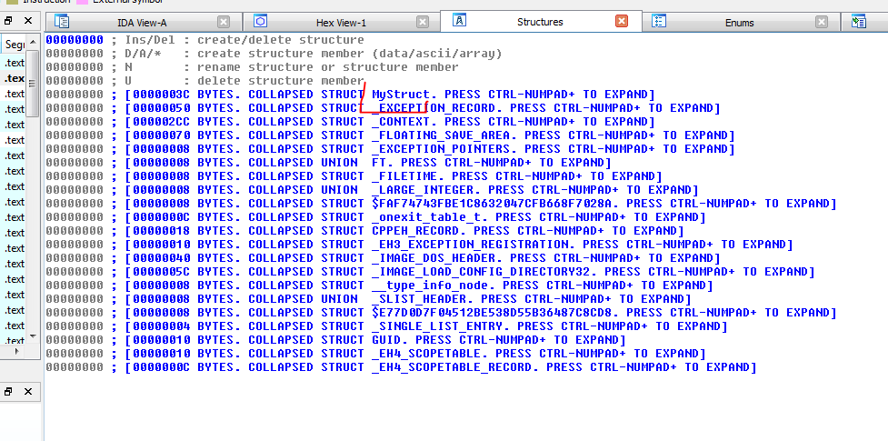
Vemos que está definida la estructura si le damos allí a CTRL mas + .
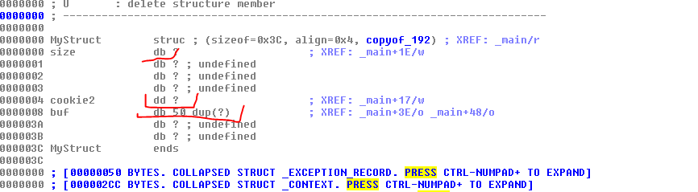
Vemos que los largos y los nombres están de acuerdo a lo que había definido la variable size de 1 byte o db, la variable cookie2 4 bytes o dd y buf de 50 bytes decimal.
struct MyStruct
{
char size; // largo 1
int cookie2; // largo 4
char buf[50]; // largo 0x32
};
Incluso en IDA hay una pestaña LOCAL TYPES para editar e ingresar estructuras en formato c++, puedo ver si está allí.
Hay muchas pero como tengo el filtro con CTRL +F pongo My y me sale
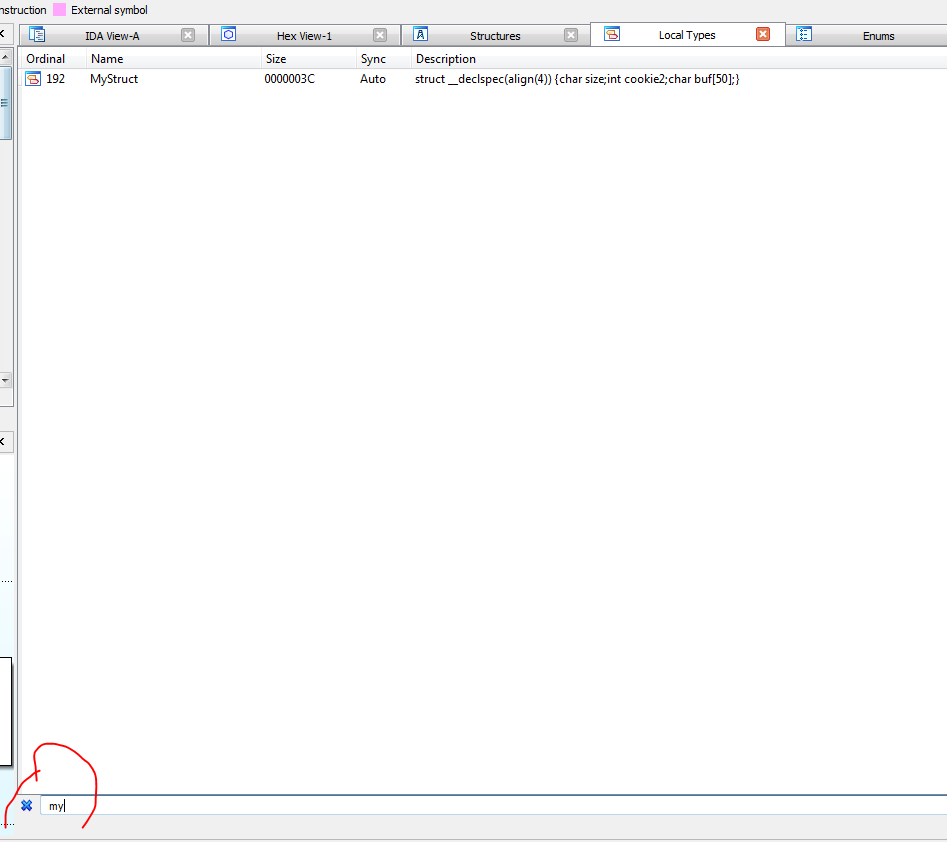
Y puedo ver haciendo click derecho EDIT
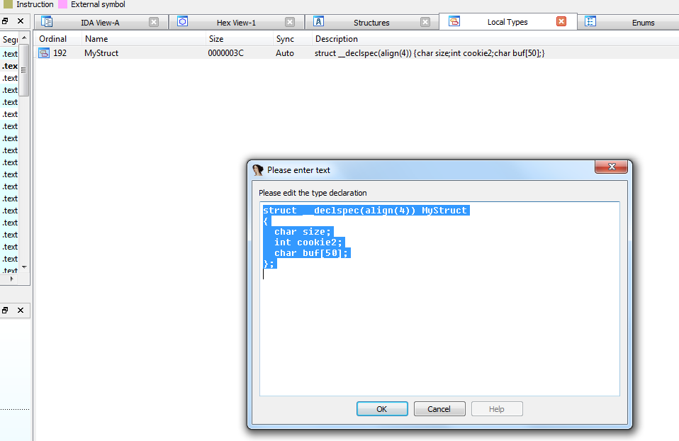
Que esta correcta.
Pero como en la vida no todo es alegría y casi nunca tendremos símbolos, habrá que traspirar un poco ya que IDA no podrá detectar sin ellos los campos ni la estructura, aunque nos da las herramientas interactivas para hacerlo.
Si cuando compilo renombro pepe.pdb
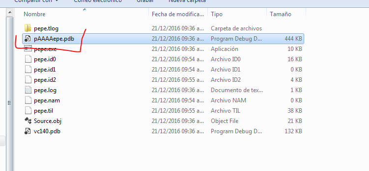
Ya no encontrara los símbolos y la cosa será más peliaguda.
Vuelvo a abrirlo a pepe.exe y que lo vuelva a desensamblar.
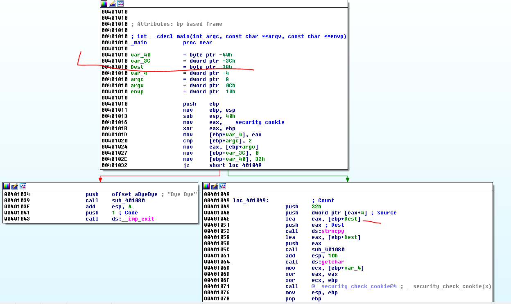
Vemos que ya no se detecta la estructura y los campos de la misma están pero como variables individuales.
Alguien podría objetar que podría reversearse así.
El tema es que este es un programa como una sola función, y una estructura sencilla, pero ya veremos más adelante en programas con muchas funciones y estructuras complejas donde se pasan la misma de una a otra función por medio de la dirección de inicio de la estructura, que es muy difícil saber en medio del programa sino lo vas armando como estructura, a que corresponde cada campo.
Ya lo veremos igualmente pero por ahora créanme, en reversing hay que saber trabajar como estructuras.
Por ahora en este caso el reversing como variables individuales funcionaria, pero pongámosle ganas y hagámoslo como si ya sabemos que es una estructura, más adelante veremos cómo detectar cuando es una estructura y cuando son variables locales sueltas.
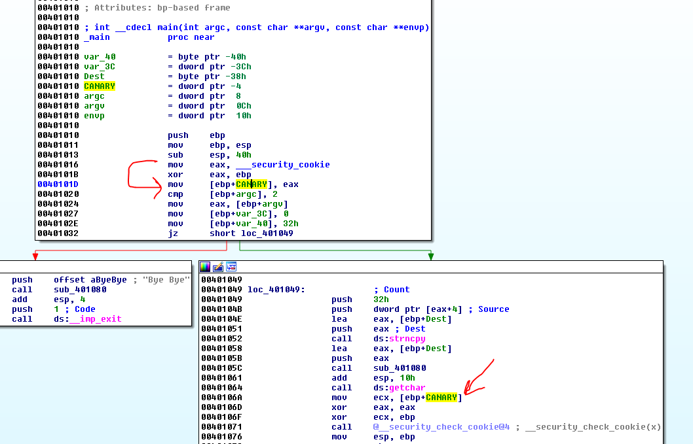
Ya conocemos de reversing anteriores el CANARY, así que lo renombramos.
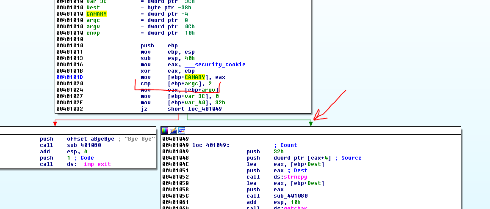
Compara argc con 2 si es igual sigue y si no va a imprimir Bye Bye y a Exit, lo pintamos de rojo eso y verde la parte buena.
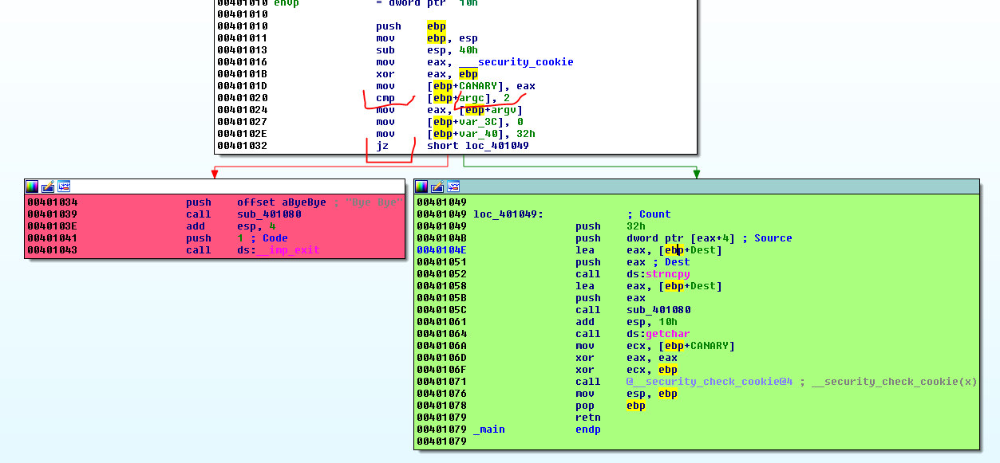
Luego vemos que guarda 0x32 en una variable y que más adelante usa 0x32 como size del strncpy, en el código nuestro usaba la variable como largo, pero aquí para ganar espacio lo pone directo con PUSH 0x32.
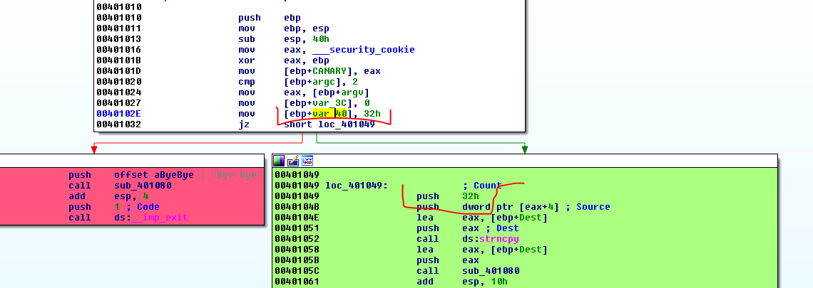
La variable var_40 no la usa más, igual la renombrare a size.
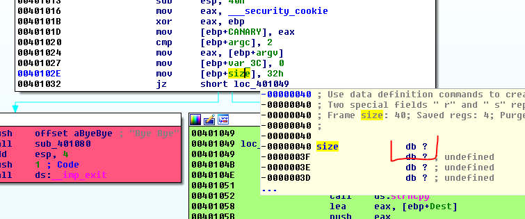
Vemos pasando el mouse por encima, que la detecta como variable de un byte (db).
También vemos haciendo click derecho que las otras representaciones nos muestran que es una variable de un byte ya que la instrucción lo dice.
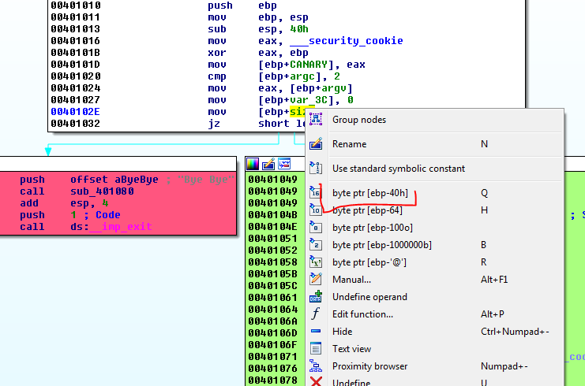
Sabemos que en el código original la variable cookie2 no se usaba y la ponía a cero.
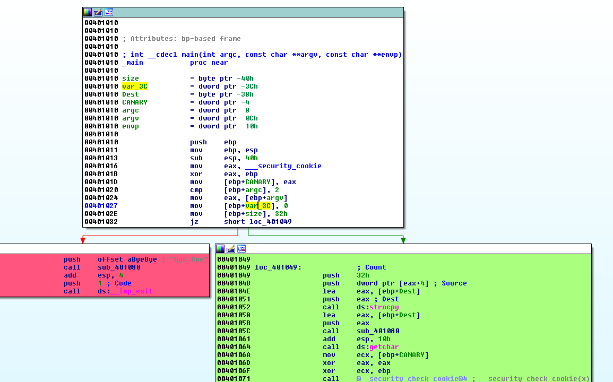
valores.cookie2 = 0;
Igual la renombraremos como cookie2 pero si no sabríamos le pondríamos cualquier nombre total no la usa más y no afecta en nada.
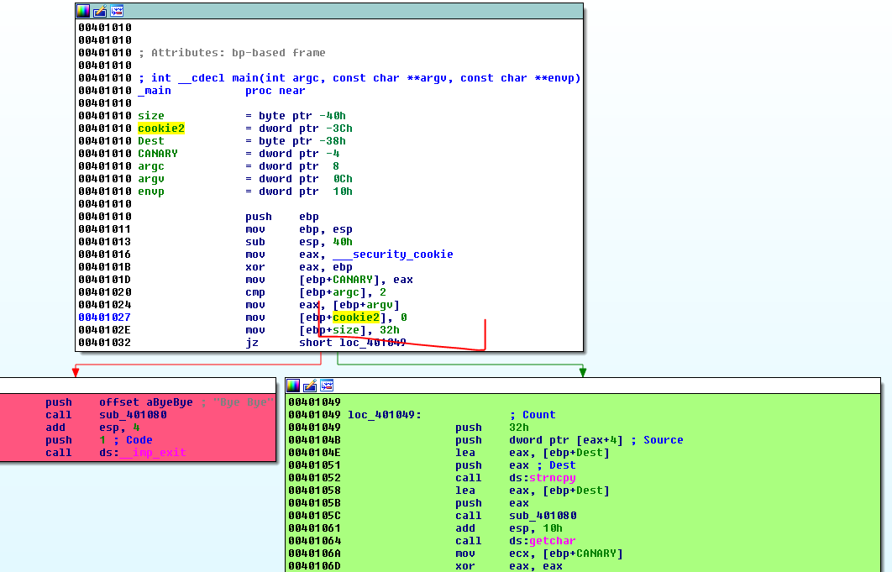
Veamos la representación del stack.
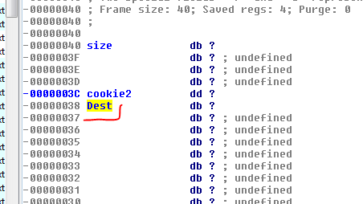
Nos falta Dest que vemos espacio vacío debajo, lo cual nos dice que puede ser un buffer, y además cuando busco referencias con X.
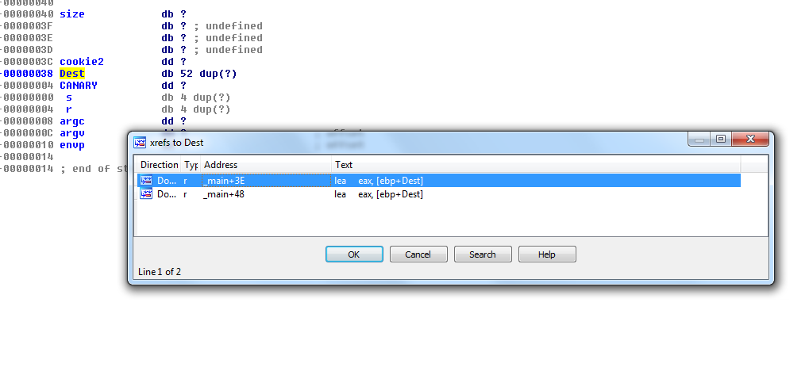
Casi siempre los buffers van a tener alguna referencia que sea LEA, ya que para llenarlo habrá que pasarle la dirección del mismo a alguna función como en este caso strncpy y el LEA la obtiene.
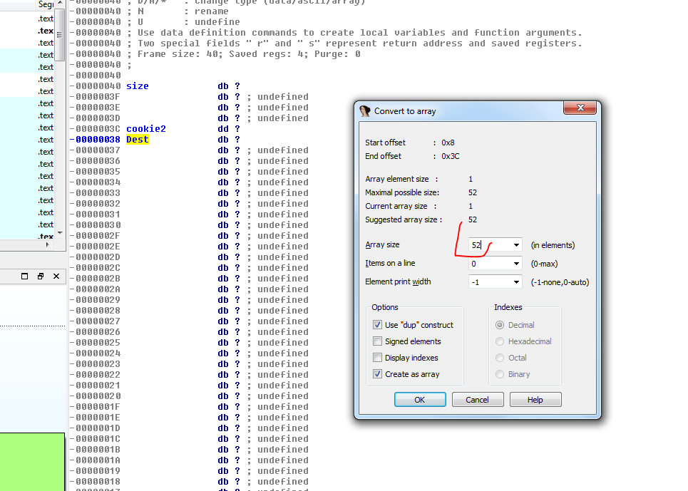
En este caso reservo 52 en vez de 50 lo cual suele suceder.
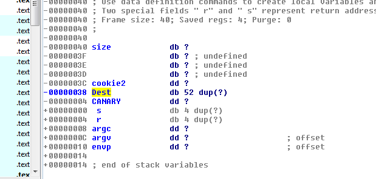
Ya vemos la representación del stack completa con esto ya podemos saber que no hay overflow, porque sabemos que el buffer Dest tiene como largo 52 y copia al mismo 0x32 bytes hexa en el strncpy.
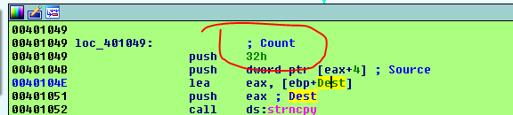
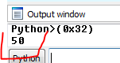
O sea que copia 50 bytes decimal a un buffer de 52 lo cual hace que no sea vulnerable y no haya overflow.
Con esto ya estaría pero bueno hay que empezar de a poco con el tema estructuras y aunque en este ejemplo no sea necesario, lo usaremos.
Vayamos a la representación del stack.
Si hay una estructura no incluirá el CANARY que lo pone el compilador
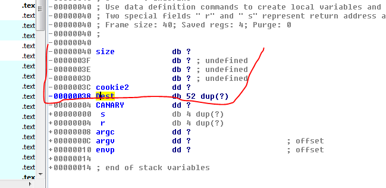
Abarcara posiblemente eso.
Así que marco esa zona y voy al menú a EDIT-CREATE STRUCT FROM SELECTION
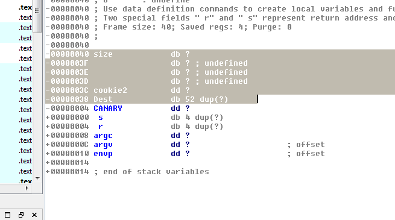
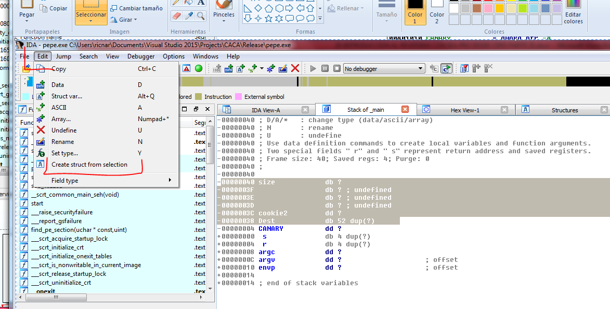
Y nos quedara así, si vemos en la pestaña estructuras.
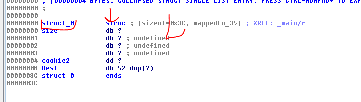
Una variable struct_0 del tipo struct podría quedar así pero renombraremos para que coincida con el código.
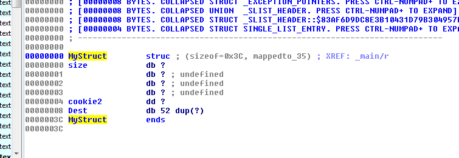
Y en la representación del stack a la variable del tipo MyStruct la renombrare a valores.
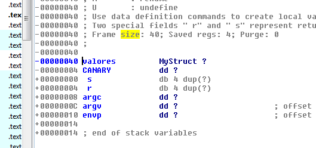
Así que ya nos está quedando parecido a cuando teníamos los símbolos.
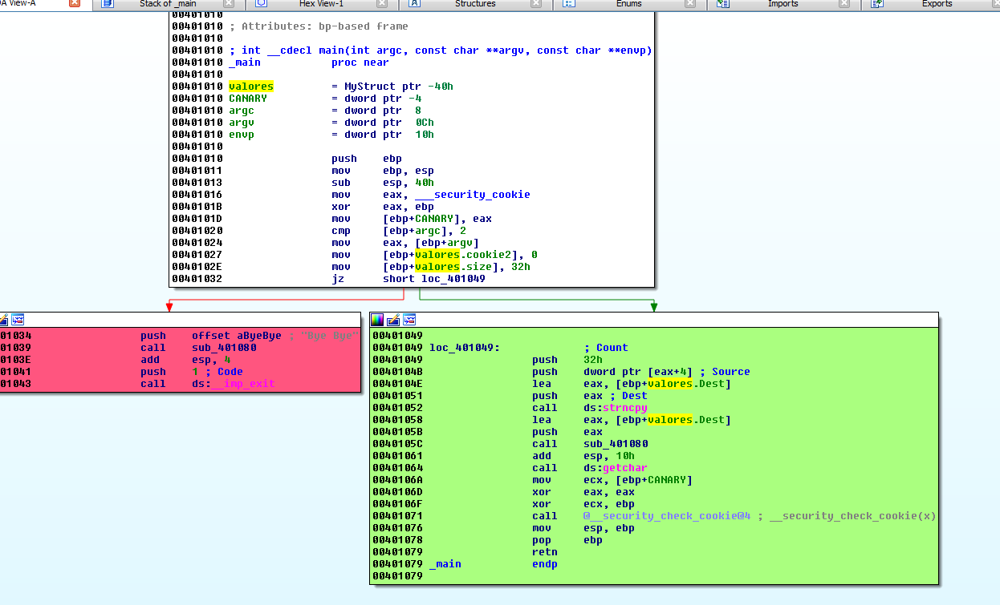
Vemos que al menos en esta función que es donde está definida la variable valores los campos los cambio de nombre automáticamente a valores.xxxx
Obviamente esta es la forma más sencilla, tenemos que saber que muchas veces en estructuras complejas habrá que reversear campo a campo y pelear para tenerla lo más completa posible.
En la parte siguiente seguiremos con ejemplos más complicados de estructuras.
Soluciones del IDA3 y IDA4.
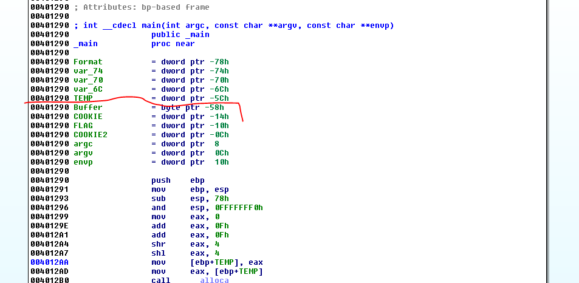
Las variables de TEMP para arriba son agregadas por el compilador.
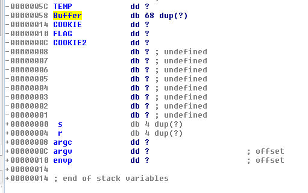
Allí veo la representación del stack, y las variables que debo pisar COOKIE y COOKIE2, ya sabemos que ingresa datos por gets, así que es vulnerable no hay limite a la cantidad de bytes que ingreso.
Veamos cual es la cantidad de bytes que necesito para llegar a desbordar hasta COOKIE.
Como COOKIE esta justo debajo de BUFFER que mide 68 bytes decimal, entonces pasando
68 * ‘A’ + “ABCD”
Me desbordaría el buffer y pisaría COOKIE, veamos qué valor necesito en dicha variable para llegar a chico bueno.
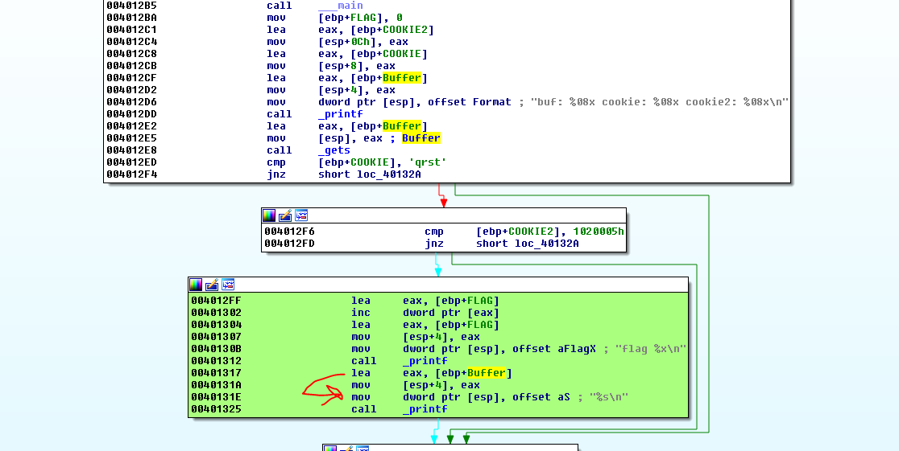
Vemos que a pesar de que no hay un chico bueno definido, me deja imprimir lo que yo quiera, ya que imprime lo que guarda en el Buffer si pasa el chequeo de ambas cookies, puedo poner en el Buffer en vez de Aes.
“Lo pude hacerrrr!!!!”
Iremos armando el script también vemos que luego de COOKIE vienen 4 bytes para Flag y los 4 siguientes serán la COOKIE2
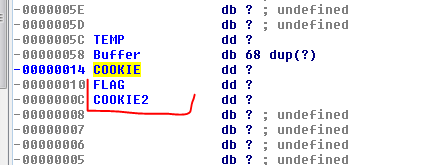
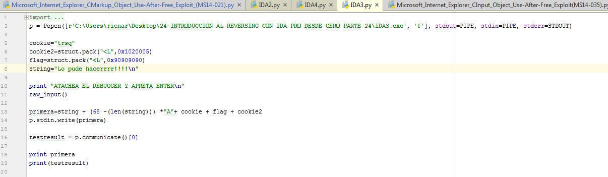
Si lo ejecuto.
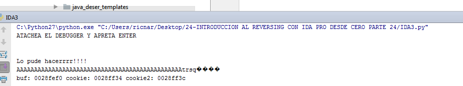
Vemos que acomode la string delante y le reste a los 68 bytes el largo de la misma string para que se mantenga en total siendo 68, y no se mueva lo que piso en cookie y cookie2.
string + (68 -(len(string))) *"A"
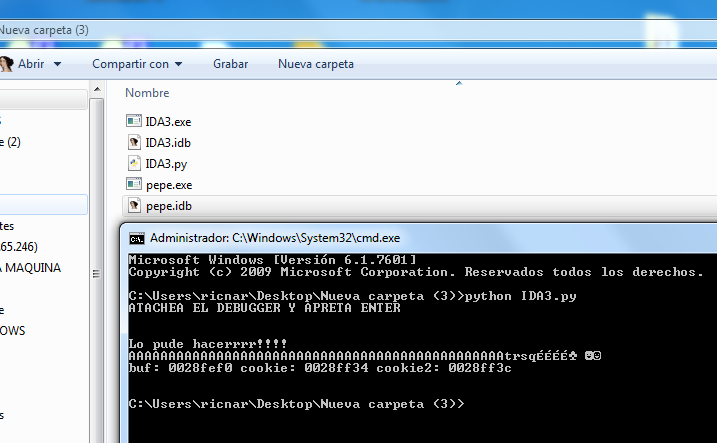
En el ida4 vemos que hay una función check
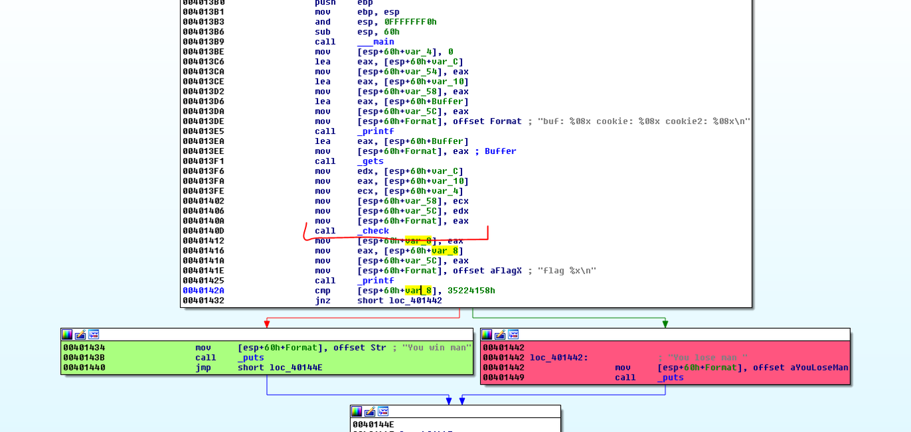
Vayamos reverseando el main.
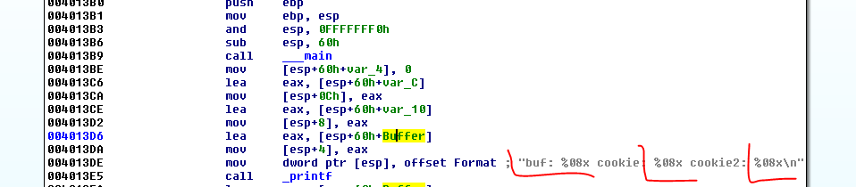
Vemos que en el printf imprime tres direcciones la de cookie, la de cookie2 y la del Buffer.
Así que renombremos según eso.
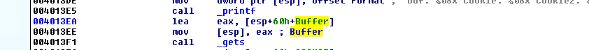
Luego le pasa el Buffer a gets, así que sabemos que será vulnerable, igual miremos el largo del buffer.
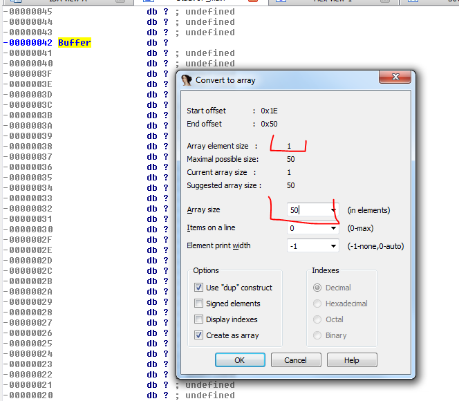
Vemos que es 50 decimal.
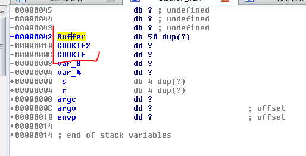
Y que a continuación hay dos cookies de 4 bytes cada una.
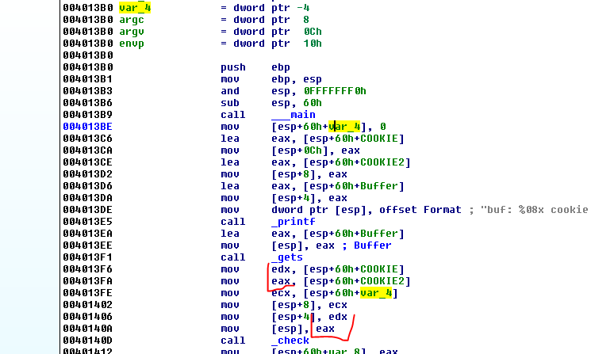
Vemos que las dos cookies se pasan como argumentos de la función check, más una variable var_4 que aún no sabemos que es, le pondremos FLAG de última le cambiamos el nombre.
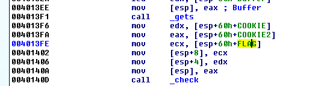
Vemos que el argumento más lejano es FLAG, luego COOKIE y finalmente COOKIE2, entremos a la función.
Vemos tres argumentos y una variable local
En la representación del stack se ve bien.
Lo que está bajo la raya debajo de s y r serán argumentos y arriba variables.
Las renombro según el orden que se pasan y hago click derecho set type para propagarlas hacia el main y ver que está todo bien.
Vemos que coincide
Vemos que la única manera de llegar al ret y no ir a exit es seguir los bloques verdes y para ello cookie1 debe compararse contra qrUS y cookie2 contra 0x10200d0a y debe no ser igual a ese valor para salir por el bloque verde, pongamos esos valores en el script.
Con eso ya salimos de la función check pero aún falta algo más, vemos que el valor que devuelve la función check es el valor de flag.
Que es el valor que guarda en var_8 y al final compara, así que flag debe ser ese valor 35224158.
Si lo probamos.
Así que funciona, nos vemos en la parte siguiente con más estructuras.
Hasta la parte 26
Ricardo Narvaja